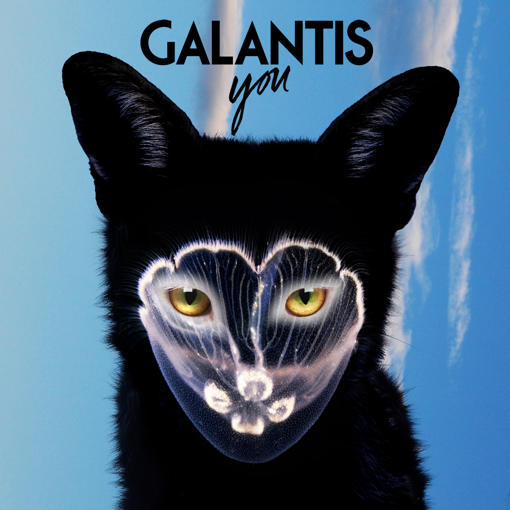

Images
Here we are going to add images and learn about various attributes that can be added for the images.

Audio
Now we deal with audio and how to embed the audio in the page.
video
Now we will try to add video and other attributes
Images with links to other pages
 We will try to go the top of the page by using internal page reference
We will try to go the top of the page by using internal page reference